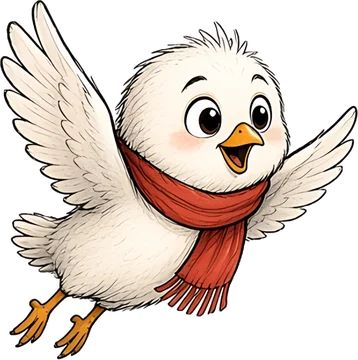
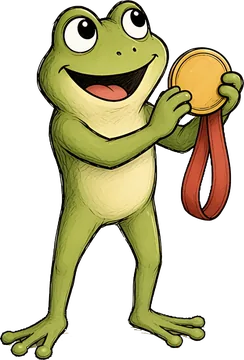
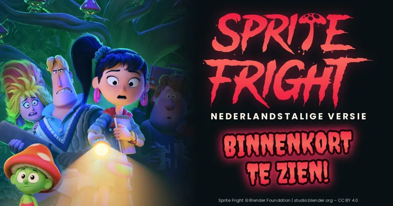

Alle films en afleveringen

Speel mee met Bram
Help Bram de pompoenen te vangen! Een spelletje voor kinderen van 5 tot 10 jaar.
Punten: 0
Vang de pompoenen!
Vangen: pompoen, appel en blaadje.
Niet vangen: rotte peer en dennenappel.
Sleep of gebruik de pijltjes
Beste score: 0
Pauze

0 punten
Goed gedaan!
Nieuw record!
Beweeg Bram met je vinger, de muis of de pijltjes. Vang pompoenen, appels en blaadjes. Pas op voor rotte peren en dennenappels! Fien laat soms een gouden pompoen vallen.
Film voor oudere kinderen

Sprite Fright (Nederlandstalig)
Deze film is wat spannender en bedoeld voor oudere kinderen. Los eerst de som op om de link te openen.